Kathoom Alkhobar ERP
yht_customDocument control
| Document | Kathoom Alkhobar ERP — User Guide |
|---|---|
| Client | Kathoom Alkhobar Trading Co. (KATHOOM ALKHOBAR TRADING CO.) |
| System | ERPNext 15 · yht_custom · ksa_compliance · hrms |
| Scope | Branch operations (Part A) and administration (Part B) |
| Status | Pre-go-live. Written against the UAT system. |
Version history
| Version | Date | Change |
|---|---|---|
| 1.0 | August 2026 | First issue. Branch and administrator parts, written and screenshotted against the live UAT system. |
| 1.2 | 25 August 2026 | A5 gains Show Purchase History. A11 rewritten: ten report tiles, seven of them KATC's, with the Stock Ledger, General Ledger and new Party Ledger tiles opening the KATC versions built to the client's own column lists. B5 documents the seven KATC print formats and the form buttons that drive them, and states plainly that page numbers and a page-two letterhead cannot print on this server. New B6a covers the Branch Manager role and cancelled-document visibility. |
| 1.1 | August 2026 | Four branch reports added to A11 (Stock Sales, Collection, Branch Receivables, Customer Statement) plus Item Prices; the Customer Statement tile now opens a real statement rather than the General Ledger. New A12 covers Quick Create for customers and the Saudi national address. A4 documents the live Stock column; A5 documents the per-row discount and how it prints. |
How to read this
Two parts. Part A is for anyone raising documents at a branch — read it start to finish once, then use it to look things up. Part B is for whoever administers the system; it assumes Part A.
Every screenshot is from the live system, and every rule was checked against it rather than written from memory. Where something is deliberately not switched on yet, it says so instead of pretending otherwise.
Branch user
Everything a branch operator needs, in the order you will need it.
A1 · What your login can see
Your login is tied to one branch, and everything follows from that.
| Setting | Your value | What it decides |
|---|---|---|
| Branch | Kathoom Alkhobar | Which documents appear in your lists |
| Warehouse | Stores - KATC | Which stock you can move and see |
| Cost centre | Buying And Selling - KATC | Filled in for you — you never pick it |
| Company | KATHOOM ALKHOBAR TRADING CO. | Filled in for you |
| Selling price list | Kathoom Selling Price | Where your selling rates come from |
| Buying price list | Kathoom Buying Price | Where your purchase rates come from |
A2 · Your dashboard
You land here when you sign in. It is your home screen, built for one job: see where the branch stands, then start work in one click.
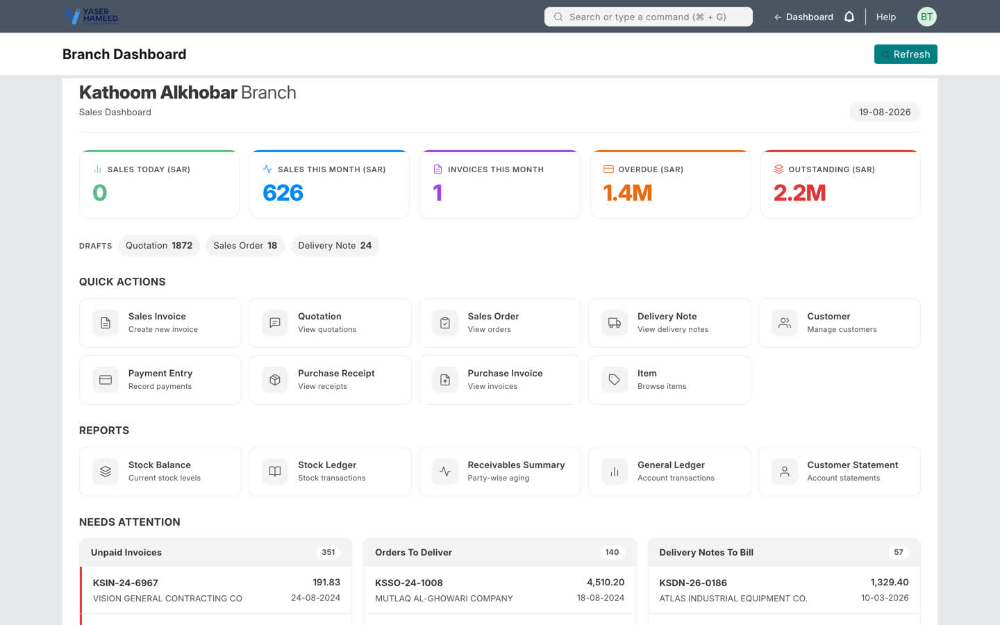
The five cards
| Card | What it means | Use it to |
|---|---|---|
| Sales Today | Submitted invoices dated today | Check the day is being billed as it happens |
| Sales This Month | Submitted invoices, 1st to today | Track the month |
| Invoices This Month | How many, not how much | Spot an unusual month |
| Overdue | Money owed past its due date | Decide who to phone today |
| Outstanding | All money owed, due or not | See total exposure |
1.4M means 1.4 million riyals. For the exact amount, open the report.
Needs attention
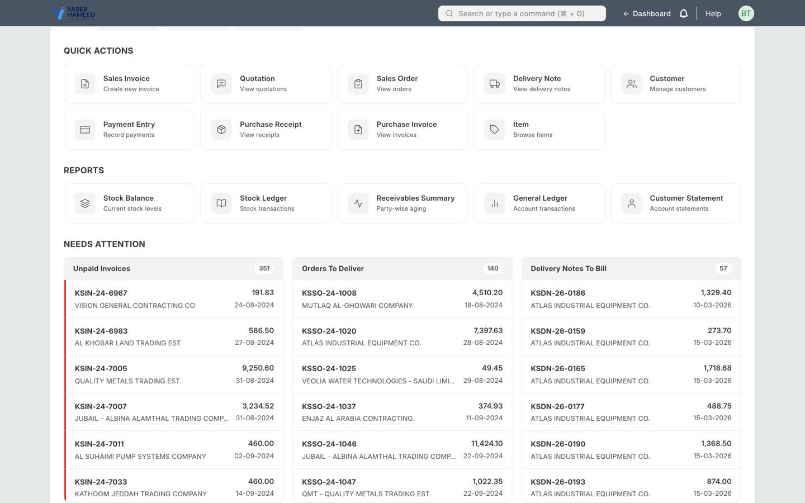
A3 · Getting back to it
Two ways, both available from any screen:
- Click ← Dashboard in the top bar, to the right of the search box.
- Click the Yaser Hameed logo in the top-left corner.
If you land somewhere your role does not cover, you are not shown an error page — an orange message names the screen and you are returned to the dashboard. That is not a fault and you have not broken anything.
A4 · Deliver first, then bill
Standard ERPNext lets you tick Update Stock on an invoice and move stock from there. That is switched off here on purpose, and the invoice tells you so:
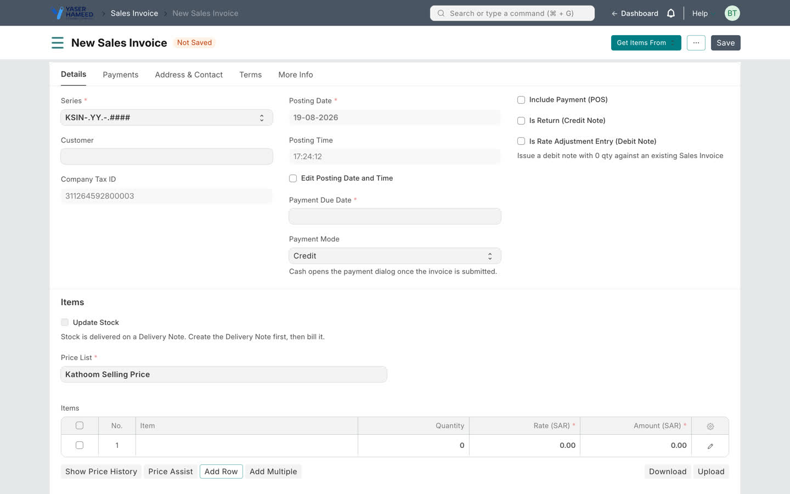
The reason is that it keeps the stock ledger and the sales ledger honest. When stock and money move on one document, correcting one quietly corrupts the other.
Step 1 — the Delivery Note
- From the submitted Sales Order: Create → Delivery Note. Items, quantities and rates carry over.
- No order? Dashboard → Delivery Note → + Add.
- Check the quantity actually going out. Change it here if it differs — this is the record of what physically left.
- The Stock column shows what is on hand in your warehouse for that item, live, as you type. If it reads less than you are about to deliver, stop — the submit will refuse it rather than go negative.
- Submit. Stock leaves
Stores - KATCat this moment. - Print — customer copy and office copy, with a signature block.
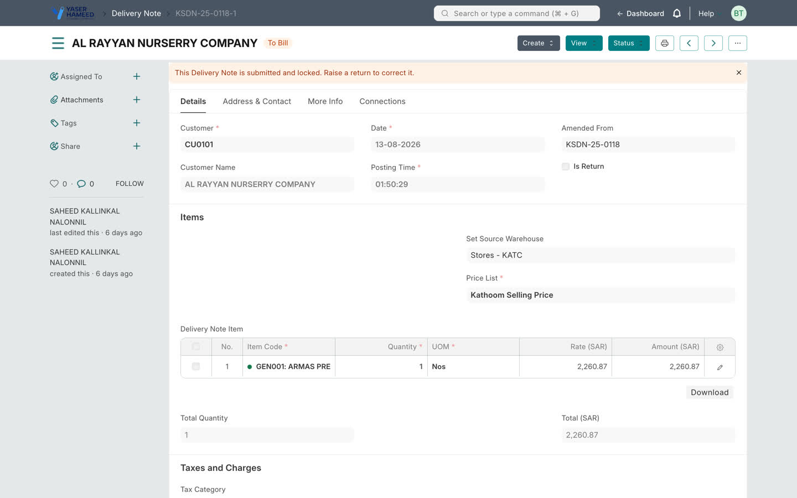
Step 2 — the Sales Invoice
- Open the submitted Delivery Note → Create → Sales Invoice.
- The items arrive already linked to the delivery. Do not retype them.
- Set Payment Mode — see A6.
- Check Payment Due Date, which fills in from the customer's terms.
- Submit.
A5 · Deciding the price
You are never guessing. Two buttons sit under the items table, next to Add Row.
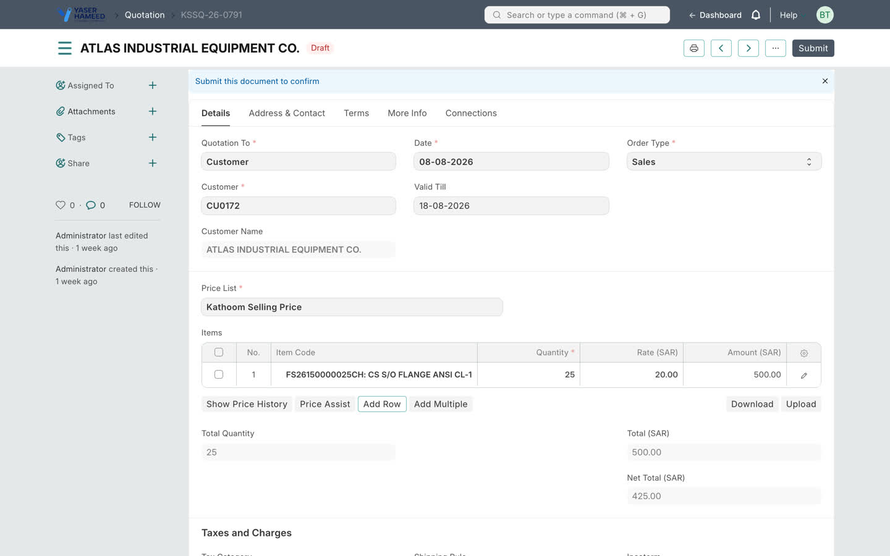
Discount
Each row carries its own Discount % column, next to the rate. Enter the discount there rather than working the rate out yourself — the rate updates on its own, and the printed document then shows the customer three numbers that add up:
| Gross Amount | what the items come to at list price |
| Item Discount | the total you gave away across all rows |
| Total | gross minus the discount — what they actually owe before VAT |
Price Assist
- Price list rate — the standard rate from Kathoom Selling Price
- Last rate to this customer — with the date and invoice number
- Last rate to anyone — with which customer
- Recent range — low, high and average across recent sales
- Valuation and margin at your rate — red if you are selling below cost
- Stock — what is available in your warehouse right now
Two shortcuts fill the row for you: Use price list rate and Use last rate to this customer.
Show Price History
The last 30 sales of that item — date, customer, quantity, rate, invoice. Open it when a customer says "you charged me less last time". The answer is on screen in one click.
Show Purchase History
Inside Price Assist, beside Show price history, there is Show purchase history. It answers the other half of the pricing question: what did we pay. Every purchase of that item — date, supplier, quantity, the rate we paid, and the supplier's own bill number — and each row links straight to the Purchase Invoice, so if a rate looks wrong you open the bill and see it.
A6 · Cash or credit
Every Sales Invoice carries a Payment Mode, under the payment due date. It is a real decision, not a formality.
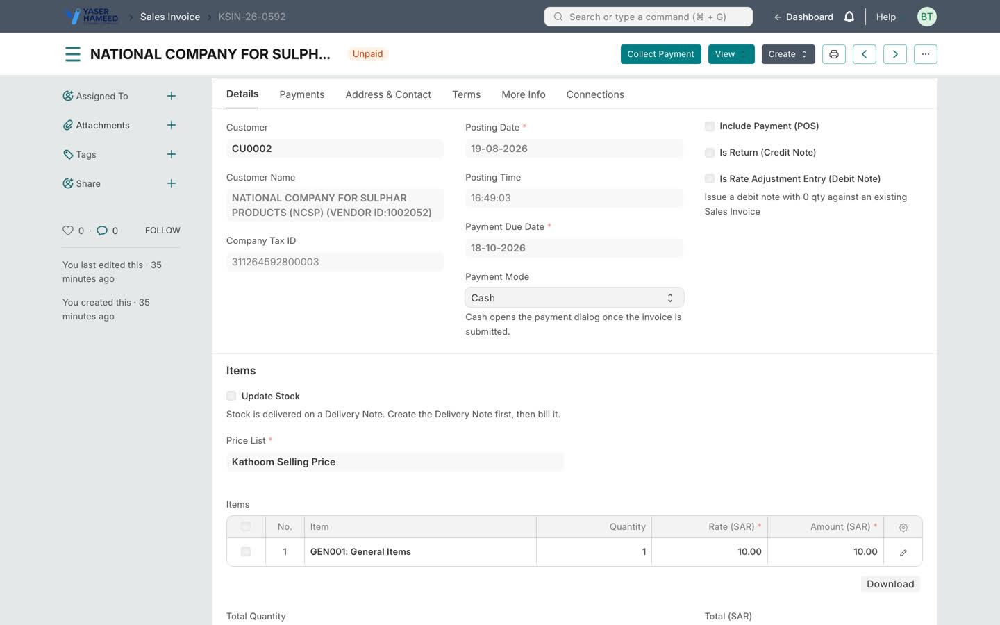
| Payment Mode | Means | What happens |
|---|---|---|
| Credit the default |
The customer will pay later | The amount joins their outstanding balance and shows on your dashboard until paid. |
| Cash | You are collecting now | As soon as you submit, the Collect Payment dialog opens. |
Pick the customer and two indicators appear at the top of the invoice: Outstanding (everything they already owe) and Credit limit, shown only if finance has set one. Going over the limit warns, it does not block.
A7 · Collecting the money
The dialog opens automatically after you submit a Cash invoice, and Collect Payment reopens it any time on a submitted unpaid invoice.
- Amount Due is shown at the top and cannot be edited.
- Enter what was actually tendered against each mode. Cash modes are listed first.
- Split it freely — part cash, part card, part transfer. Tendered and Still due update as you type.
- Press Record Payment. One receipt is created per mode used.
Your branch can tender against eight modes — two cash, six bank. They are listed in B2.
A8 · Returns and credit notes
A return starts where the goods are, not where the money is. The same rule as A4, run backwards: stock left the branch on a delivery note, so it comes back on one, and the credit note follows.
- Open the Delivery Note the goods went out on → Create → Sales Return.
- Set the quantities actually coming back. They show as negative — that is correct, and if you type a positive number the system flips it for you.
- Tick Issue Credit Note before you submit.
- Submit. The return delivery note takes
KSDR-26-…, and the credit note is created and submitted for you, numberedKSSR-26-…, already linked to it.
A9 · Receiving goods
Buying mirrors selling: stock arrives on a Purchase Receipt, and the Purchase Invoice bills what already arrived.
- Dashboard → Purchase Receipt → + Add.
- Supplier, then the items and quantities actually received into
Stores - KATC. - Submit. Stock arrives at this moment.
- Then Create → Purchase Invoice from the receipt.
A10 · Expense bills
For costs with nothing to put in stock — rent, fuel, a repair, a phone bill.
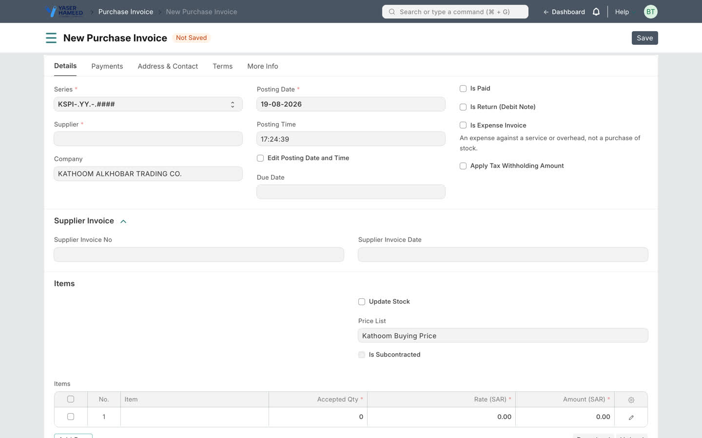
- Dashboard → Purchase Invoice → + Add.
- Tick Is Expense Invoice.
- Pick the Expense Head — the account this cost belongs to.
- Add a row per line on the supplier's bill: description and amount. No item code.
- Enter the supplier's own number in Supplier Invoice No.
- Paid on the spot in cash? Tick Is Paid and choose the account.
- Submit. It takes an expense number,
KSEPI-26-….
A11 · Your reports
Seven of these are yours — built for this branch, and each answers one question. The rest are ERPNext's own. If two reports seem to answer the same thing, use the one whose name matches the question you actually have.
The Stock Ledger, General Ledger and Party Ledger tiles open the KATC versions, built to the column list you asked for. ERPNext's own versions of the first two are still there if you want them — search for them by name, or open the KATC Reports screen, which lists every report on one page.
| Report | Answers | Reach for it when |
|---|---|---|
| Stock Sales | What did we sell — by item, item group or customer? | Reviewing a month, or finding your best lines |
| Collection | What money came in, and through which till or bank | Reconciling a day's takings |
| Branch Receivables | Every unpaid invoice, aged into 0–30 / 31–60 / 61–90 / 90+ | Working the debt oldest first |
| Customer Statement | One customer's full account history, with a running balance | A customer queries their balance |
| Stock Balance | How much of each item do I have, and what is it worth? | A customer asks if you have something |
| Stock Ledger | Every movement of an item, in date order — with Qty In and Qty Out as two separate columns, the running balance, the rate it was booked at, the valuation rate and the value left | A quantity looks wrong and you need to see why |
| Receivables Summary | Who owes us, grouped by customer | A quick view across all customers at once |
| General Ledger | One account — date, voucher, remarks, debit, credit and a running balance, starting from that account's real opening balance | Checking how something was booked |
| Party Ledger | The same six columns for one customer or supplier, across whichever accounts their entries landed in | A customer or supplier rings up about their balance |
| Item Prices | The price list rate for every item | Quoting away from the screen |
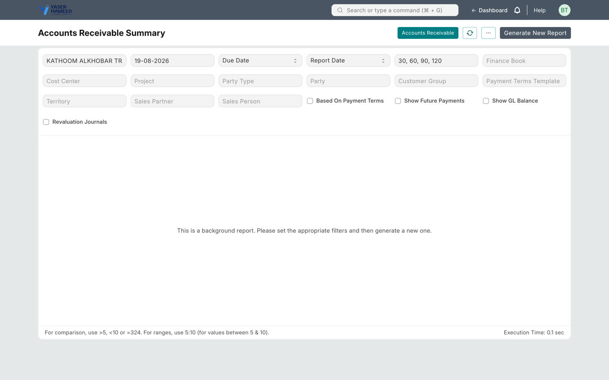
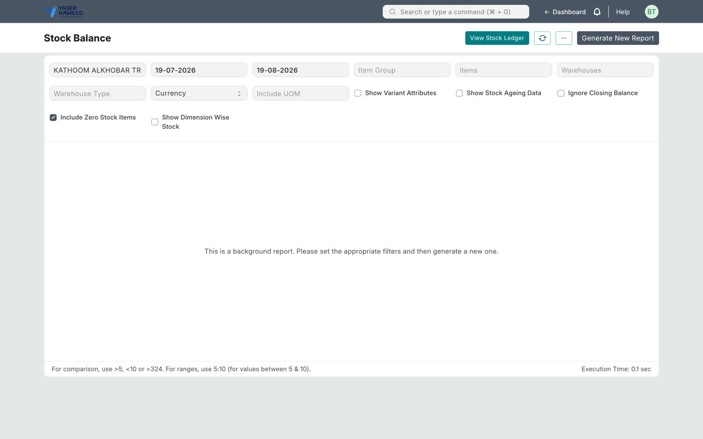
Every report is filtered to your branch. Set the date range at the top before reading anything: a report showing less than you expected is usually a date range, not missing data.
A12 · Adding a customer
A walk-in with no record yet does not need the full customer form. On the Customer list, or from the New Customer tile on your dashboard, use Quick Create. One screen makes the customer, the address and the contact together.
The address fields follow the Saudi national address: Street, Building Number
(4 digits), District, City, Postal Code (5 digits), and optionally the
Short Address — the eight-character code like RQAA2929. Enter a Short
Address and it becomes the address title, so the record is findable by the code the customer
themselves quotes.
The form checks the shapes as you save: a three-digit building number or a two-digit postal code is refused with the reason. Leaving a field empty is allowed; putting the wrong thing in it is not.
A13 · What you cannot do, and who to ask
| You cannot | Why | Ask |
|---|---|---|
| Move stock on a Sales Invoice | Stock moves on a Delivery Note only | Nobody — use a Delivery Note |
| Edit a submitted Delivery Note | It records what physically left | Your manager, for a return document |
| Cancel a document | Limited to one designated person | Your manager |
| See another branch's documents | Your login is scoped to Kathoom Alkhobar | Head office |
| Pick a cost centre or company | Derived from your branch | Nobody — it is already correct |
| Put a stock item on an expense invoice | It would double-count the purchase | Nobody — use a Purchase Receipt |
| Tender more than is due | It would create a credit needing unpicking | Nobody — give change from the drawer |
Administrator
Configuring and maintaining the system. Assumes Part A.
B1 · Branch Configuration
One Branch Configuration record per branch. It is the single place a branch's behaviour is defined, and saving it provisions everything downstream.
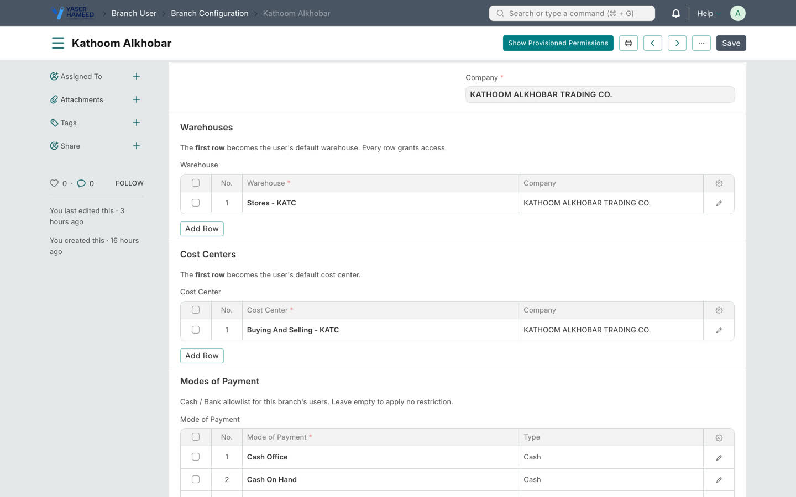
Branch Configuration: Kathoom Alkhobar. Warehouses, cost centres, payment modes and users, in one record.Saving it:
- creates the User Permissions that scope each listed user to the branch
- upgrades Website users to System users where needed
- assigns the Branch User role directly
- applies the Module Profile that trims the desk sidebar
B2 · Payment modes
The Modes of Payment table is the Cash/Bank allowlist for that branch's users — it is what the Collect Payment dialog offers.
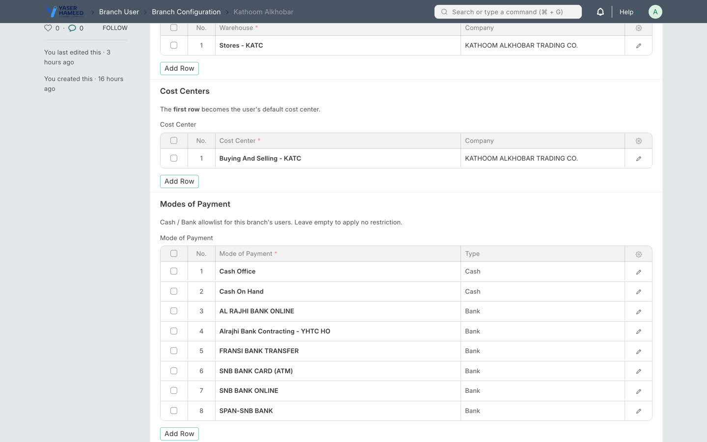
These eight were seeded automatically, and the rule matters: a mode is only offered if it is enabled and has a default account for the branch's company. Twenty-one modes are enabled on this system; only eight are usable. Offering the other thirteen would let an operator allocate money and only discover the problem at submit.
B3 · Numbering series
Every number starts KS (from Branch.custom_doc_prefix), then the
document type, the year, and a running count. KSIN-26-0184 is the 184th sales
invoice of 2026.
| Document | Normal | Return / credit |
|---|---|---|
| Quotation | KSSQ-.YY.-.#### | — |
| Sales Order | KSSO-.YY.-.#### | — |
| Delivery Note | KSDN-.YY.-.#### | KSDR-.YY.-.#### |
| Sales Invoice | KSIN-.YY.-.#### | KSSR-.YY.-.#### |
| Purchase Order | KSPO-.YY.-.#### | — |
| Purchase Receipt | KSPRN-.YY.-.#### | KSPRR-.YY.-.#### |
| Purchase Invoice | KSPI-.YY.-.#### | KSPR-.YY.-.#### |
| Expense invoice | KSEPI-.YY.-.#### | KSPR-.YY.-.#### |
| Payment Entry | KSPY-.YY.-.#### | — |
| Journal Entry | KSJV-.YY.-.#### | — |
| Material Request | KSMR-.YY.-.#### | — |
| Stock Entry | KSSE-.YY.-.#### | — |
| Stock Reconciliation | KSRC-.YY.-.#### | — |
KSSR-, KSDR-, KSPR- — so the numbering runs
straight on from the old records rather than restarting.
B4 · Item code prefixes
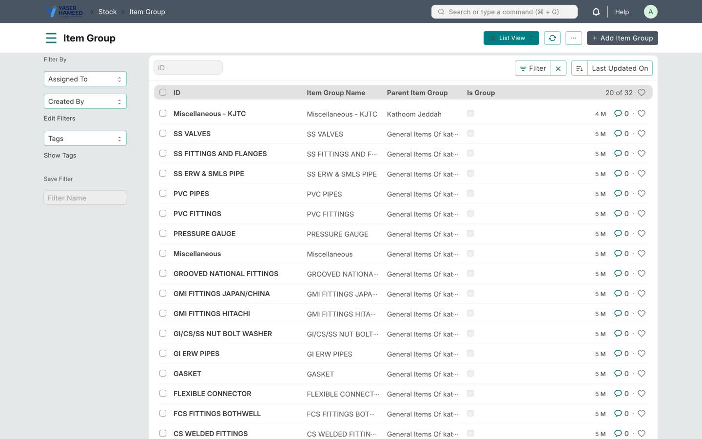
The mechanism generates an item code from its group's prefix. It is live and per-group.
B5 · Print formats
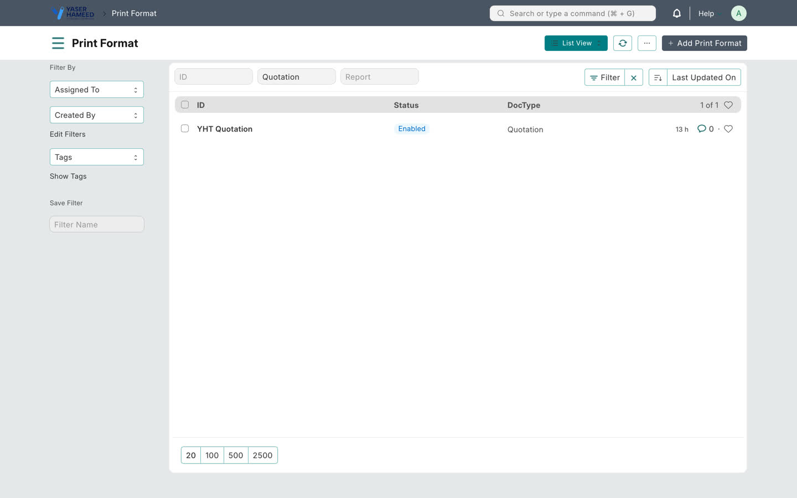
YHT are this implementation's.| Doctype | Format | Doctype default? |
|---|---|---|
| Delivery Note | YHT Delivery Note — customer + office copies, signature block | Yes |
| Quotation | YHT Quotation | Yes |
| Sales Order | YHT Sales Order — three switchable titles | Yes |
| Purchase Invoice | YHT Expense Invoice | No — deliberately; it suits expense invoices only |
| Sales Invoice | — | No — deliberately unset pending ZATCA onboarding |
The KATC formats and the print buttons
Seven further formats beginning KATC reproduce the layouts from the client's
previous system, on an HTML letterhead. They are reached from buttons on the form, not
from the print menu — the buttons pass the letterhead explicitly, which the print menu cannot
do for a document that still carries an older letterhead on it.
| Doctype | Button | What you get |
|---|---|---|
| Delivery Note | Print PDF | KATC Delivery Note on the letterhead |
| Print Without LH | The same layout, header band left clear for pre-printed paper | |
| Sales Invoice | Print PDF | KATC Tax Invoice on the letterhead |
| Print Without LH | The same layout, header band clear | |
| Sales Order | Print PDF | KATC Sales Order on the letterhead |
| Print with Arabic | KATC Sales Order Arabic — adds an Arabic item-name column | |
| Proforma Invoice | KATC Proforma Invoice — prices, tax and bank details. What you send when the customer needs to pay before delivery. | |
| Print Without LH | The plain sales order, header band left clear for pre-printed paper | |
| Quotation | Print PDF | KATC Quotation on the letterhead |
| Print with Arabic | KATC Quotation Arabic — adds an Arabic item-name column and the bank details | |
| Proforma Invoice | KATC Quotation Proforma — the same proforma layout as the Sales Order one | |
| Print Without LH | KATC Quotation No LH — a different document, not the same page with the header removed |
YHT formats are untouched and still available from the printer
icon — including YHT Delivery Note with its customer and office copies. Nothing
was deleted and no doctype default was changed.
B6 · Permissions and scoping
Three layers, and they are deliberately independent:
| Layer | Does | Where |
|---|---|---|
| Custom DocPerm | Decides what the role may open at all | setup.BRANCH_USER_PERMISSIONS |
| Permission query conditions | Decides which rows they see in a list | branch_filters |
| Server-side scope guard | Rejects a write pointing outside the branch | branch_guard.validate_branch_scope |
validate
is the boundary, and it holds on the desk, the REST API, imports and Server Scripts alike.
Payment Entry.party_type is declared Link → DocType, but its
picker is narrowed by a query that searches Party Type — and that is the doctype
permission-checked. A branch user hit a bare "No permission for Party Type" because
an audit of declared Link targets could never have found it. When adding a doctype to the
role, run the smoke test rather than reasoning about field definitions.
The smoke test is the check that matters — it opens every dashboard tile as a list and as a form, runs every dashboard report, exercises every picker, and asserts the claims this guide makes to you:
bench --site yht-khobhar.enfonoerp.com run-tests --app yht_custom --skip-before-tests
--skip-before-tests.
Without it, every installed app's before_tests hook fires, and ERPNext's
deletes every Item Price row on the site. That has already happened once here
— 4,847 rows, restored from backup.
B6a · Branch Manager, and cancelled documents
There are now two branch roles. Branch User is unchanged. Branch Manager reaches everything a Branch User does — the same doctypes, the same branch scoping — plus one thing that makes it a manager.
| Role | Sees cancelled documents? |
|---|---|
Branch User | No. Cancelled documents are filtered out of every list. |
Branch Manager | Yes. Cancelled documents stay visible. |
System Manager | Yes — an administrator who cannot see a cancelled document cannot investigate one. |
B7 · Deploying a change
All five steps matter, in this order:
cd /home/v15/yht-bench/apps/yht_custom && sudo -u v15 -H git pull upstream main cd /home/v15/yht-bench && sudo -u v15 bench --site yht-khobhar.enfonoerp.com migrate sudo -u v15 bench --site yht-khobhar.enfonoerp.com clear-cache sudo -u v15 touch sites/assets/assets.json sudo supervisorctl signal QUIT yht-bench-web:yht-bench-frappe-web
upstream, not origin; sudo -u v15 needs
-H; and the app directory must be chown -R v15:v15 if anything has
run as root in it.
touch sites/assets/assets.json is not optional.
The browser caches the whole dashboard page document in localStorage, and that cache only
clears when the build version changes — which is that file's timestamp. Without it the
change is invisible to anyone already signed in, forever. Clearing cache, restarting the
worker and a hard refresh all fail to fix it.
/home/v15/yht-bench, not frappe-bench.
frappe-bench on the same box runs other clients' live sites.
B8 · Open items before go-live
| Item | State | Needed |
|---|---|---|
| ZATCA e-invoicing | Installed, nought ZATCA Business Settings rows, so every hook does nothing | Client CSR/OTP credentials |
| Item code prefixes (B14) | Nought of 29 leaf groups | Client decision per group |
| Freeze dates (B15) | Both 0001-01-01 — every historical period is writable | A date from YHT finance |
| Credit limits | Nought Customer Credit Limit rows, so the warning is dormant | Finance to set limits |
| Test account | branchtest@yht-khobhar.enfonoerp.com is a project account | Disable before go-live |
KS-JV-26-0074),
stock-versus-GL variance is SAR 74,409.27, and there are 102 negative bins.
The agreed acceptance test is a trial-balance match, so these clear before cut-over or get
accepted in writing.